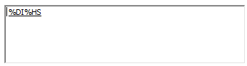
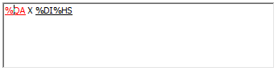
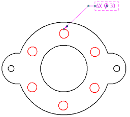

Place a hole callout
You can place a callout that shows the diameter of a hole, as well as the hole quantity.
-
In the Draft environment, choose the Home tab→Annotation group→Callout
 .
.The Callout command is also available in modeling environments on the PMI tab.
-
In the Callout Properties dialog box, on the General tab, do the following:
-
Delete any information in the Callout text and Callout text 2 boxes.
-
In the Special characters section, click the Diameter button to display the diameter symbol.
-
In the Feature reference section, click the Size button to extract the hole size.
The Callout text box now contains the following property text:

-
In the Callout text box, click in front of the property text, and then type a hole quantity prefix.
As part of the prefix, you can enter any of the property text codes associated with hole count quantity (%QN, %QA, %QC, %QP), and you can add plain text. You also can use the Symbols and Values button
 to select and insert the property text codes instead of typing them.Example:
to select and insert the property text codes instead of typing them.Example:Entering %QA X specifies that you want to include the quantity of all of the holes with the same parameters in the callout, based on the hole you select.

-
-
Locate the edge of a hole, so that the center point symbol is displayed, and then click to place the callout.

How do I
Place a calloutPlace a feature callout
Customize a feature callout
Define smart feature properties in the Dimension style
Learn more
Formatting callout text and borderManipulating callouts
Look up more details
Callout commandCallout command bar
Callout Properties dialog box
General tab (Callout Properties dialog box)
Text and Leader tab
Feature Callout tab
Border tab (Callout Properties dialog box)
Quick links
Place a feature callout dimensionBasic reference and property text rules
Format codes to modify reference and property text output